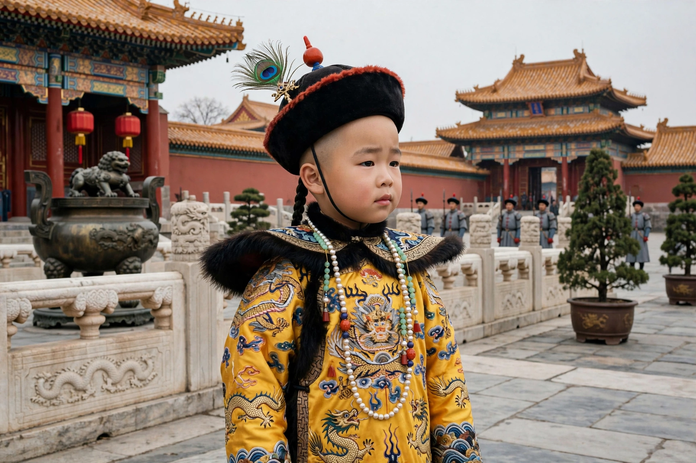

Puyi

Born: 7 February 1906, Beijing
Died: 17 October 1967, Beijing
Reigns: Emperor of Qing, 1908–1912 (brief restoration 1917); Emperor of Manchukuo, 1934–1945
Also known as: Henry Pu Yi
Puyi (7 February 1906 – 17 October 1967) was the last emperor of China, the final ruler of the Qing dynasty. Crowned as the Xuantong Emperor before his third birthday, he abdicated in 1912, briefly returned to the throne in 1917, later became the puppet emperor of Japanese-controlled Manchukuo, and ended his life as an ordinary citizen — and gardener — in the People's Republic of China.
Early life and abdication
Puyi was chosen by the dying Empress Dowager Cixi in 1908 to succeed the Guangxu Emperor, his uncle. His father, Prince Chun, served as regent. Following the Xinhai Revolution, the boy emperor abdicated on 12 February 1912 under an agreement — the Articles of Favourable Treatment — that let him keep his title and reside in the Forbidden City. A warlord restored him for twelve days in July 1917. In 1924 the warlord Feng Yuxiang expelled him from the palace; Puyi took refuge in the Japanese concession at Tianjin, tutored in English by Reginald Johnston and adopting the name Henry.
Manchukuo
After Japan seized Manchuria in 1931, Puyi was installed in 1932 as chief executive, and in 1934 as emperor (Kangde), of the puppet state of Manchukuo, entirely controlled by the Kwantung Army. When Japan surrendered in 1945 he was captured by Soviet troops, held in Siberia, and testified at the Tokyo war crimes trials.
Later life
Returned to China in 1950, Puyi spent nine years in a "re-education" prison at Fushun before being pardoned in 1959. He worked as a gardener at the Beijing Botanical Gardens and later as a researcher, married a nurse, Li Shuxian, in 1962, and published a ghostwritten autobiography, From Emperor to Citizen. He died of cancer in 1967. His life inspired Bertolucci's Academy Award-winning film The Last Emperor (1987), filmed partly in the Forbidden City.
See also: Qing dynasty · History of China · Sun Yat-sen